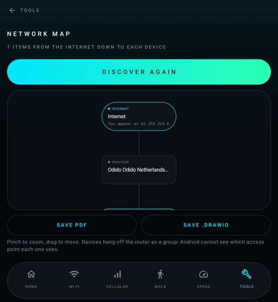

Ultimate Network Troubleshooter: WiFi analyzer, speed test and network scanner for Android
The Swiss army knife for your network: find the best WiFi channel, map nearby 4G/5G antennas, test your speed and see who is on your WiFi.
Free with one small banner ad. A one-time purchase removes it.
Ultimate Network Troubleshooter finds out what is wrong with your WiFi, which channel is best, where mobile antennas are, how fast your connection really is and what is on your network. It starts simple, with a plain-language view, and has an Advanced switch for dBm, channel widths, cell IDs and raw details. There is no account, and what the app measures stays on your phone.

WiFi channel analyzer and network health score
See every nearby network on 2.4, 5 and 6 GHz, how much they overlap and which channel is best for your area, in plain words. The home screen turns your WiFi and mobile signal into one network health score. Switch on Advanced for dBm, channel widths and raw details.

4G and 5G antenna map
See your serving cell with signal strength and quality, and the mobile antennas around you on a map. Positions come from OpenCelliD, BeaconDB and OpenStreetMap, so towers are estimates.

Speed test and walk-around WiFi heat map
Measure download, upload, ping and jitter against Cloudflare's public speed servers, or test against a public iPerf3 server. Walk mode lets you walk around your home or office and tap where you stand to build a signal heat map that shows the weak spots and the best channel for the whole house.

Who is on my WiFi: device scanner
Scan your network to list the devices that answer, with their brand where Android allows it. Devices not seen in an earlier scan of the same network are marked New.
Network map and PDF report
Map everything from the internet down to each device, including every hop of the route. Save the map as a PDF or a draw.io file, and hide IP addresses and names before you share it. A full network report exports as an A4 PDF.

Port scanner and security checks
A TCP port scanner (common ports, 1-1024, or all in Advanced mode) explains in plain language what each open port means. The exposure check shows what the internet can reach on your network, and listening mode hears what devices announce without sending anything. Only scan networks you own or have permission to test.
More network tools
- Route map, ICMP and TCP ping, iPerf3 client and server
- DNS lookup, Whois, IP and provider lookup, website and certificate check
- Wake-on-LAN and subnet calculator
- Cloud and services check: about 40 services plus each provider's own status page, so you can tell a provider outage from your own connection
- Bluetooth scan for nearby devices, beacons and trackers
- App activity: timed scans that show which apps use mobile and WiFi data, with a PDF report
Guides
- How to choose the best WiFi channel
Why 1, 6 and 11 matter on 2.4 GHz, how 5 and 6 GHz differ and how to find the least crowded channel.
- Make a WiFi heat map of your home
Walk around, tap where you stand and see where the signal is weak.
- Port scanner basics
What an open port means and why you should only scan networks you own or may test.
Frequently asked questions
How do I find the best WiFi channel?
Open the WiFi screen. The app scans nearby networks on 2.4, 5 and (where your phone supports it) 6 GHz, measures how much they overlap and tells you in plain words which channel is least crowded in your area. Walk mode repeats this around your home.
Is Ultimate Network Troubleshooter free?
Yes. It is free with one small banner ad. A one-time purchase removes the ad for good, with no subscription.
Why does it ask for location access?
Android requires precise location permission before any app may list nearby WiFi networks and mobile antennas. The app uses it on your phone only. Bluetooth scanning needs the Nearby devices permission, and App activity needs Usage access, which is only requested if you use that tool.
Can I see who is on my WiFi?
The device scan lists the devices that answer on your network, with a brand where Android allows it. Android 11 and newer hide other devices' hardware addresses from apps, so some names come from other signals such as mDNS, UPnP and device web pages.
Are the cell tower positions exact?
No. Android reports cell IDs, not coordinates, so positions are looked up in OpenCelliD, BeaconDB and OpenStreetMap and are estimates. Neighbouring cells often report no ID and cannot be mapped.
Is it legal to scan a network, and can I see other people's traffic?
Only scan networks you own or have permission to test; the scanners send packets to the hosts you choose. The app cannot capture other devices' traffic, because Android does not allow it.
Does the app upload my data?
There is no account and we run no analytics of our own. What the app measures stays on your phone. Some features contact public services only when you use them, for example OpenCelliD and BeaconDB for antenna positions and Cloudflare for the speed test. The free version shows Google AdMob ads, which may collect data under Google's consent rules. The privacy policy lists everything.

Privacy policy · Support: kalmariumservices@gmail.com